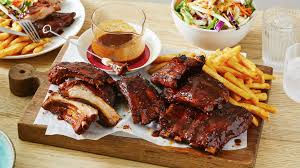

Sticky BBQ Ribs
Home
Slow cook these American-style pork ribs so they're really tender then coat in an irresistibly sweet, sticky sauce and serve with a cooling chive dip.

Sweet, smoky and sticky ribs... what more could you want?
Ingredients
Main (serving 4):
- 2 racks baby back pork ribs
- 2 cans cola
- 2 tsp toasted sesame seed
For the sauce:
- 8 tbsp tomato ketchup
- 8 tbsp soft brown sugar
- 2 tbsp soy sauce
- 2 tbsp Worcestershire sauce
- 2 tbsp sweet chilli sauce
- 1 tsp paprika
For the chive dip:
- 300 ml pot half-fat soured cream
- 2 tbsp salad cream
- small bunch chive snipped
- 6 spring onion sliced
Steps
- Heat oven to 160C/140C fan/gas 3 and fit the ribs into a roasting tin.
- Pour over the cola and enough water to cover the ribs, then cover the tin tightly with foil. Roast for 2-3 hrs, turning halfway through, until the ribs are really tender but not falling apart
- Meanwhile, put all the sauce ingredients in a small saucepan. Gently heat, then bubble for about 2 mins, stirring.
- When done, lift ribs on kitchen paper to dry. Tip away the liquid and wipe out the tin.
- Put the dry ribs back in the tin and coat all over with the sticky sauce. Cover and chill for at least 1 hr to marinate, but better still up to 24 hrs.
- Mix the dip ingredients together and chill until ready to serve.
- Heat the barbecue and wait for the flames to die down, then cook ribs for 20 mins, turning occasionally, and basting often with remaining sauce.
- When ribs are sticky and crisping on the outside, slice to serve. Scatter with sesame seeds and plate up with any remaining sauce and the chive dip.
And finally, serve alongside chips and coleslaw to really elevate the experience... enjoy!